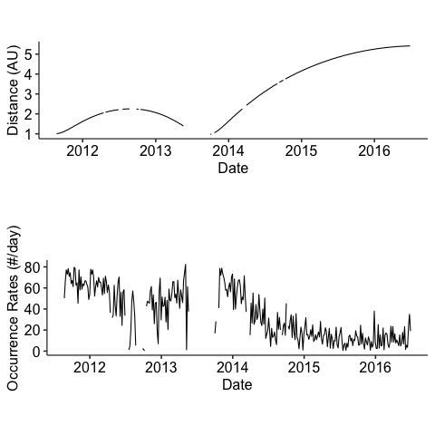
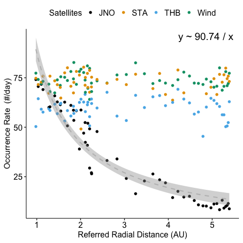
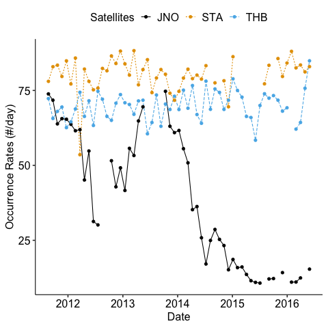
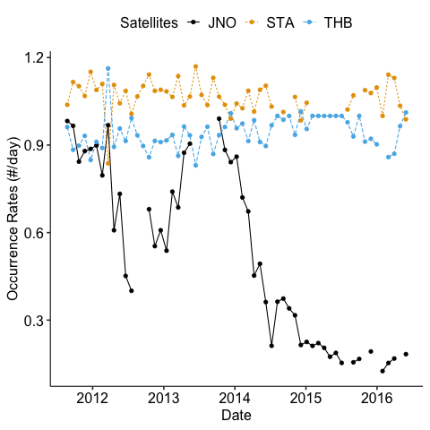
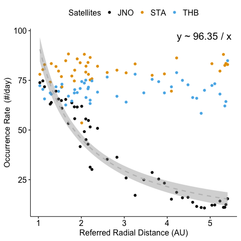
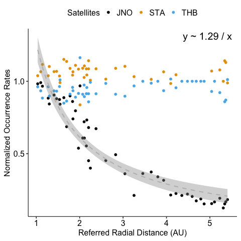

Code
from fastcore.utils import *
from fastcore.test import *
from ids_finder.utils.basic import *
from datetime import timedelta
import polars as pl
import polars.selectors as cs
import pandas as pd
import numpy as np
import seaborn as snspython with R kernelKedroINFO Loading data from 'candidates.STA_ts_1s_tau_60s' data_catalog.py:502 (LazyPolarsDataset)...
INFO Loading data from 'STA.primary_mag_ts_1s' (PartitionedDataset)... data_catalog.py:502
INFO Loading data from 'candidates.JNO_ts_1s_tau_60s' data_catalog.py:502 (LazyPolarsDataset)...
INFO Loading data from 'JNO.primary_mag_ts_1s' (PartitionedDataset)... data_catalog.py:502
INFO Loading data from 'candidates.THB_ts_1s_tau_60s' data_catalog.py:502 (LazyPolarsDataset)...
INFO Loading data from 'THB.primary_mag_ts_1s' (PartitionedDataset)... data_catalog.py:502
ARTEMIS missions needs additional care as they are not always in the solar wind.
thb_inter_state_sw: pl.LazyFrame = catalog.load('thb.inter_state_sw')
start, end = thb_inter_state_sw.select(['start', 'end']).collect()
thb_sw_candidate = cIDsDataset(
sat_id="THB", tau=60, ts=1, catalog=catalog,
candidates = filter_tranges_df(thb_candidate.candidates, (start, end)),
data = filter_tranges_df(thb_candidate.data.collect(), (start, end)).lazy()
)INFO Loading data from 'thb.inter_state_sw' (LazyPolarsDataset)... data_catalog.py:502
Different levels of normalization are applied to the data. The normalization is done in the following order:
N1: normalize the data by the the effective time of every duration due to the data gap as we may miss some potential IDs. We assume the data gap is independent of the magnetic discontinuities.N2: normalize the data by the mean value of data near 1 AU. This is to remove the effect of the temporal variation of the solar wind.def calc_n1_factor(
data: pl.LazyFrame,
s_resolution: timedelta,
l_resolution: timedelta,
):
return (
data.sort("time")
.group_by_dynamic("time", every=s_resolution)
.agg(pl.lit(1).alias("availablity"))
.group_by_dynamic("time", every=l_resolution)
.agg(n1_factor=pl.sum("availablity") * s_resolution / l_resolution)
)
def n1_normalize(
df: pl.DataFrame, # the dataframe with count to be normalized
data: pl.LazyFrame, # the data used to calculate the duration ratio
s_resolution, # the smallest resolution to check if the data is available
avg_window,
):
duration_df = calc_n1_factor(data, s_resolution, avg_window)
return df.lazy().join(duration_df, how="left", on="time").with_columns(
o_rates_normalized=pl.col("o_rates") / pl.col("n1_factor")
).collect()def calc_or_df(candidates: pl.DataFrame, avg_window="5d", col_names=None, by=None):
"""Calculate the occurence rate of the candidates with the average window.
Notes: occurence rate is defined as the number of candidates per day.
"""
every = pd.Timedelta(avg_window)
or_factor = every / pd.Timedelta("1d")
cols = cs.by_name(col_names) if col_names != None else cs.float()
temp_df = (
candidates.sort("time")
.group_by_dynamic("time", every=every, by=by)
.agg(
cols.mean(),
o_rates = pl.count() / or_factor,
)
.upsample("time", every=every) # upsample to fill the missing time
)
return temp_df
@patch
def calc_or(self: cIDsDataset, avg_window="5d", col_names=None):
return calc_or_df(self.candidates, avg_window, col_names)
@patch
def calc_or_normalized(self: cIDsDataset, s_resolution: timedelta, avg_window: timedelta):
count_df = self.calc_or(avg_window)
return n1_normalize(count_df, self.data, s_resolution, avg_window)p1 <- ggplot(df, aes(x = time, y = radial_distance)) +
geom_line() + # Plot distance by date
labs(x = "Date", y = "Distance (AU)") +
theme_pubr(base_size = 16) +
theme(aspect.ratio=0.25)
p2 <- ggplot(df, aes(x = time, y = o_rates)) +
geom_line() + # Plot distance by date
labs(x = "Date", y = "Occurrence Rates (#/day)") +
theme_pubr(base_size = 16) +
theme(aspect.ratio=0.25)
p <- ggarrange(p1, p2, nrow = 2)
# save_plot("distance_and_or")
p
def plot_or_time(df: pl.DataFrame):
"""Plot the occurence rate of the candidates with time.
"""
# Create a unique list of all satellites and sort them to let JNO' be plotted first
all_sats = df["sat"].unique().to_list()
all_sats.sort(key=lambda x: x != "JNO")
# Plot each satellite separately
for sat in all_sats:
sat_df = df.filter(sat=sat)
if sat == "JNO":
sns.lineplot(sat_df, x="time", y="o_rates_normalized", label=sat)
else:
# Making the other satellites more distinct with linestyle and alpha
sns.lineplot(
sat_df,
x="time",
y="o_rates_normalized",
linestyle="--", # dashed line style
alpha=0.5, # keep the order of the legend
label=sat,
)
ax = plt.gca() # Get current axis
# Set the y-axis and x-axis labels
ax.set_ylabel("Occurrence Rates (#/day)")
ax.set_xlabel("Date")
ax.legend(title="Satellites")
# savefig("occurrence_rates")
return ax.figureNotes: seaborn.lineplot drops nans from the DataFrame before plotting, this is not desired…
plot_or_time <- function(df) {
p <- ggline(
df, x = "time", y = "o_rates_normalized",
color = "sat", linetype = "sat")
p <- p +
labs(x = "Date", y = "Occurrence Rates (#/day)", color="Satellites", linetype="Satellites") +
theme_pubr(base_size = 16) +
theme(legend.text = element_text(size=16)) +
scale_color_okabeito(palette = "black_first")
print(p)
return(p)
}In addition: Warning message:
Removed 6 rows containing missing values (`geom_point()`). 
We noticed some anomalies in the occurrence rates of the magnetic discontinuities for Stereo-A data. Also for Juno, its occurrence rate is much higher when approaching Jupiter.
| time | o_rates | o_rates_normalized | n1_factor |
|---|---|---|---|
| datetime[ns] | f64 | f64 | f64 |
| 2014-01-10 00:00:00 | 71.5 | 74.697105 | 0.957199 |
| 2014-02-09 00:00:00 | 79.1 | 79.134805 | 0.99956 |
| 2014-03-11 00:00:00 | 79.366667 | 82.101482 | 0.96669 |
| 2014-04-10 00:00:00 | 78.933333 | 78.944298 | 0.999861 |
| 2014-05-10 00:00:00 | 80.1 | 80.116691 | 0.999792 |
| 2014-06-09 00:00:00 | 72.4 | 78.784856 | 0.918958 |
| 2014-07-09 00:00:00 | 74.0 | 83.265179 | 0.888727 |
| 2014-08-08 00:00:00 | 4.4 | 9.83342 | 0.447454 |
| 2014-09-07 00:00:00 | 12.266667 | 77.541703 | 0.158194 |
| 2014-10-07 00:00:00 | 7.066667 | 82.619756 | 0.085532 |
| 2014-11-06 00:00:00 | 11.6 | 78.238876 | 0.148264 |
| 2014-12-06 00:00:00 | 10.666667 | 69.554717 | 0.153356 |
Surprisingly, we found out that the anomaly of STEREO-A data is not mainly due to data gap. We can inspect this data further. See appendix.
We remove the anomaly of STEREO-A and the restrict the time range to exclude Jupiter’s effect.
all_candidates_or_N1_cleaned = (
all_candidates_or_N1.sort("time")
.filter(pl.col("time") < pd.Timestamp("2016-06-01"), pl.col("o_rates") > 10)
.upsample("time", every=avg_window, by="sat", maintain_order=True)
.with_columns(pl.col("sat").forward_fill())
)
all_candidates_or_N2_cleaned = n2_normalize(all_candidates_or_N1_cleaned)Saving 6.67 x 6.67 in image
Saving 6.67 x 6.67 in imageIn addition: Warning messages:
1: Removed 20 rows containing missing values (`geom_point()`).
2: Removed 20 rows containing missing values (`geom_point()`).
3: Removed 20 rows containing missing values (`geom_point()`). 
Saving 6.67 x 6.67 in image
Saving 6.67 x 6.67 in imageIn addition: Warning messages:
1: Removed 20 rows containing missing values (`geom_point()`).
2: Removed 20 rows containing missing values (`geom_point()`).
3: Removed 20 rows containing missing values (`geom_point()`). 
def link_coord2dim(df: pl.DataFrame, dim="time", coord: str = "radial_distance"):
"""Link the coord to a dimension across different subgroups
Note: this idea is borrowed from the `xarray.DataArray.coords`.
"""
base_df = df.filter(sat="JNO").select(dim, coord).rename({coord: f"ref_{coord}"})
return df.join(base_df, on=dim)
def plot_or_r(df: pl.DataFrame):
"plot normalized occurence rate over radial distance"
sns.lineplot(x="ref_radial_distance", y="o_rates_normalized", hue="sat", data=df)
ax = plt.gca() # Get current axis
ax.set_yscale("log")
ax.set_xlabel("Referred Radial Distance (AU)")
ax.set_ylabel("Normalized Occurrence Rate")
# savefig('occurrence_rate_ratio')
return ax.figureplot_or_r <- function(df, target_sat = "JNO") {
"plot normalized occurrence rate over radial distance"
# Filter data for target_sat
df_target <- df[df$sat == target_sat,]
# Compute the linear model
fit <- lm(o_rates_normalized ~ I(1/ref_radial_distance), data = df_target)
# Extract coefficients
intercept <- coef(fit)[1]
slope <- coef(fit)[2]
# Format equation
equation <- sprintf("y ~ %.2f / x", slope)
p <- ggscatter(df, x = "ref_radial_distance", y = "o_rates_normalized", color = "sat") +
geom_smooth(data = df_target, formula = y ~ I(1/x), method = "lm", color="gray", linetype="dashed")
p <- p +
labs(x = "Referred Radial Distance (AU)", y = "Occurrence Rate (#/day)", color="Satellites") +
annotate("text", label = equation, x = Inf, y = Inf, hjust = 1.1, vjust = 1.5, size = 7) +
theme_pubr(base_size = 16) +
theme(legend.text = element_text(size=16)) +
scale_color_okabeito(palette = "black_first")
return(p)
}Saving 6.67 x 6.67 in image
Saving 6.67 x 6.67 in imageIn addition: Warning messages:
1: Removed 10 rows containing non-finite values (`stat_smooth()`).
2: Removed 40 rows containing missing values (`geom_point()`).
3: Removed 10 rows containing non-finite values (`stat_smooth()`).
4: Removed 40 rows containing missing values (`geom_point()`).
5: Removed 10 rows containing non-finite values (`stat_smooth()`).
6: Removed 40 rows containing missing values (`geom_point()`). 
Saving 6.67 x 6.67 in image
Saving 6.67 x 6.67 in imageIn addition: Warning messages:
1: Removed 10 rows containing non-finite values (`stat_smooth()`).
2: Removed 40 rows containing missing values (`geom_point()`).
3: Removed 10 rows containing non-finite values (`stat_smooth()`).
4: Removed 40 rows containing missing values (`geom_point()`).
5: Removed 10 rows containing non-finite values (`stat_smooth()`).
6: Removed 40 rows containing missing values (`geom_point()`). 